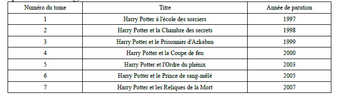
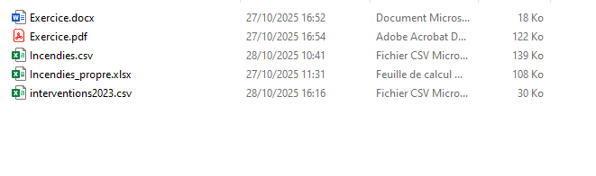

Structures de données — niveau SNT
Introduction
Aujourd'hui , la data est au coeur de toutes les activités. Pas un jour sans entendre parler des data centers, les formations professionnelles autour des datas se multiplient. La data est au coeur de tout. Il faut comprendre le passé pour prédire l'avenir. Pour cela, on doit étudier les données.
Aujourd'hui, la capacité à collecter ces données est très importante et nous avons les outils pour les traiter. L'intelligence artificielle s'appuie sur ces fameuses données. Les agents les exploitent afin de proposer leurs solutions.
ici, nous allons nous intéresser à des exemples simples , en utilisant notamment des tableurs pour structurer puis exploiter ces données .
A retenir
Les structures de données permettent de :
- Stocker
- Structurer
- Exploiter
Vocabulaire

Un tel tableau s'appelle une collection ou une table.
Sur chaque ligne, on trouve un enregistrement ou un objet.
Sur chaque colonne, on trouve un descripteur.
A l'intersection des deux se trouve une donnée.
Un enregsitrement est donc caractérisé par un certains nombres de données .
Une donnée peut prendre des valeurs de différentes natures : Cela peut être un nombre (entier ou réel), une chaine de caractères, une format spécial de type date ...
Exercice
Dans le tableau ci dessus, citez les descripteurs et expliquez ce que représente chaque objet de la collection.
Format
Le format d'un fichier en informatique est indiqué par son extension, généralement quelques lettres après un point dans le nom du fichier . C'est cette extension qui indique "à l'ordinateur ' comment lire et utiliser le fichier
Exemples
 On a ici deux format texte : docx et csv Des formats binaires xlsx, pdf: Les formats binaires ne sont pas lisibles par des logiciels de traitements de texte .
Remarque : Pour afficher les extensions dans windows, ouvrir l'explorateur de fichiers, puis affichage et cochez extension des noms de fichiers.
Format et données structurées
. Les formats xsl, xlsx, ods utilisés par des logiciels comme Excel , Libre Office ou Open Office.
. Le format csv qui présente l'avantage de pouvoir être utilisé directement par des langages informatiques comme Python. Ce format est exploitable par des tableurs classiques.
. Le format Json , adapté au langage javascript.
. Le format sql , utilisé pour les bases de données qui regroupent des collections géantes .
A retenir
- Une extension de fichier permet de savoir comment l'ouvrir et l'utliser
- Le format csv , qui est un format texte, présente la spécificité d'être facilement exploittable par différents types de programmes : Tableur, lecteur de fichier texte , programme informatique .
- Les formats binaires ne sont pas lisibles par des logiciels de traitements de texte
Activité 1
 Par groupe de cinq, vous devez choisir quatre descripteurs qui permettent de faire deviner, sans citer son nom:
Par groupe de cinq, vous devez choisir quatre descripteurs qui permettent de faire deviner, sans citer son nom:
- Un pays
- Une voiture
- Un individu
- Un aliment
A retenir
Les descripteurs sont fondamentaux pour bien classer et identifier les données . On retrouve cette exigence lorsqu'on écrit un prompt avec l'IA
Activité 2
Vous allez créer un fichier *.csv à l'aide du logiciel Excel
Consignes
- Le thême est libre
- Votre table contient au moins dix objets et quatre descripteurs
- Le fichier est enregistré au format csv, délimiteur : point virgule.
- Le fichier est enregistré dans le dossier de votre espace personnel : SNT/StructuresDeDonnes
Réalisation d'une feuille de calcul pour calculer la moyenne d'un élève :
Consignes
- 3 descripteurs : Matière, Note, Coefiicient.
- 8 enregsitrements : Maths, PC, EPS, Français, HG, SNT, SVT, Anglais
- Les coefficients respectifs sont : 5, 2, 2, 6, 2, 1, 1, 3
- Vous mettez une note entre 0 et 20
- Vous devez calculer votre moyenne en tenant compte des coefficients
- Le fichier est enregistré dans le dossier de votre espace personnel : SNT/StructuresDeDonnes
Activité 3 : Récupération d'un fichier "données ouvertes"
Nous allons importer puis préparer nos données afin de les étudier . Pour cela , vous allez vous rendre sur le site data.gouv et accéder aux données relatives aux incendies en France en 2024. Pour retrouver le bon fichier :
- Il est émis par IGN
- Il s'agit de la base de données des incendies de forêt en France
- Vous devez arriver sur le site gouvernemenatl de l'agriculture
- Le fichier que vous devez téléchargez est au format csv
- Vous le téléchargez dans votre espace personnel sous cette architecture: SNT/StructuresDeDonnes/incendies2024.csv
Activité 4
Votre fichier , sans être illisible , n'est pas très présentable. C'est un problème d'encodage des caractères.
Essayer de l'enregistrer au format csv, point virgule , utf8. Une fois que votre fichier est "opérationnel", répondre aux questions sur la fiche d'exercices.
Datacenters et coût écologique
Les datacenters hébergent serveurs et stockent d'énormes quantités de données ; ils consomment beaucoup d'électricité pour le fonctionnement et le refroidissement. Cette consommation entraîne des émissions de CO2 selon la source d'énergie, et produit de l'équipement obsolète (e‑waste). Pour réduire l'impact : optimiser l'efficacité logicielle (moins de calculs inutiles), mutualiser les ressources (virtualisation), utiliser des centres conçus pour l'efficacité énergétique et privilégier les énergies renouvelables. Sensibiliser aux bonnes pratiques (supprimer les données inutiles, limiter les sauvegardes excessives) contribue aussi à diminuer l'empreinte écologique.